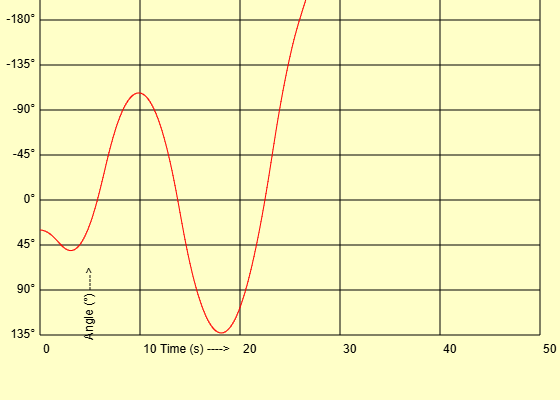

Chaos theory is an interdisciplinary are of scientific study and a branch of mathematics. A chaotic system is unpredictable but deterministic- meaning its state at a particular time is determined by the initial state but it's future state can't be predicted by current state. Such system behave differently, i.e., their state differ exponentially, with passage of time propotional to difference in initil state.
Non-linear dynamics and Chaos
Non-linear dynamical systems refer to systems that exhibit behaviour not restricted to linear relationship, often characterized by complex phenomenon suc as chaos and sensitive dependence on initial condition.
Chaos is the study of phenomena which are highly sensitive to initial condition- even very small difference in initial condition in initial state between two systems can lead to very different states overtime.
meaning, difference of state between two systems at a point of time is exponential to time times the initial state difference.
A Double Pendulum is the simplest example of a chaotic system. It exhibit chaos- even very small difference in initial state between systems of double pendula leads to larger distinguishable state overtime.
A system of double pendulum is an extension of simple pendulum- another pendulum is hinged at the end of first pendulum.

L = ½ (m1-m2)l1²θ̇1² + ½ m2l2²θ̇2² + m2l2l1θ̇1θ̇2cos(θ1-θ2) + (m1+m2)gl1cosθ1 + m2gl2cosθ2
After solving Euler Lagrange method for θ1 and θ2:
(m1+m2)l1²θ̈1 + m2l1l2θ̈2cos(θ1-θ2) + m2l1l2θ̇2²sin(θ1-θ2) + (m1+m2)gl1sinθ1 = 0
m2l2²θ̈2 + m2l1l2θ̈1cos(θ1-θ2) – m2l1l2θ̇1²sin(θ1-θ2) + m2gl2sinθ2 = 0
The project largely is the development and implementation of numerical method of integration for a system of double Pendulum.
-
Euler's Method: It computes the nest point based on previous point and slope function. This method is not effiecient for continuous functions as it requires very small step size in turn increasing the iteration.
-
Runge-kutta 4th order (RK4) method: It is a more efficient way to compute next point based on current point and its slope function. It does not vary with step size.


The above image shows the difference between euler's method and RK4 method for integrating into a sine function. While Euler's method struggles to keep up with the actual function with bigger step size, RK4 method follows the function exactly even at bigger step-size.
The development of simulation includes the following steps:
-
System designing and mathematical modelling of double Pendulum system
This includes defining of dependent parameters like angles (θ1 and θ2) and angular velocities (ω1 ω2), independent parameters like bob masses (m1 and m2), lengths of string (l1 and l2) and gravity g and other parameters like step-size for iteration.
-
Mathematical model development and implementation
This includes development of mathematical model specific to system design and parameters. It generates a table of states of system for iteration with time.
-
Visualization: Simulation and Graphs
Based on table generated in previous step, visual simulation is implemented and angle vs time graph is created.
-
Data retrieval for comparative study
The table data is retrieved in Comma Separated Values (.csv) format and then visualized for studying.
The double pendulum system works on the following four equations:
θ̈1=
(-m₂l₂²θ̇²sin(θ₁-θ₂) – (m₁+m₂)l₂gsinθ₁ – m₂l₁l₂cos(θ₁-θ₂)sin(θ₁-θ₂) + m₂gl₂sinθ₂cos(θ₁-θ₂))((m₁+m₂)l₁l₂ – m₂l₁l₂cos²(θ₁-θ₂))
θ̈2=
((m₁+m₂)l₁²sin(θ₁-θ₂) – (m₁+m₂)gl₁sinθ₂ + m₂l₁l₂θ̇₂²sin(θ₁ θ₂)cos(θ₁-θ₂) + (m₁+m₂)l₁gsinθ₁cos(θ₁-θ₂))((m₁+m₂)l₁l₂ – m₂l₁l₂cos²(θ₁-θ₂))
(θ̇₁)=
∫θ̈₁ dt
(θ̇₂)=
∫θ̈₂dt


